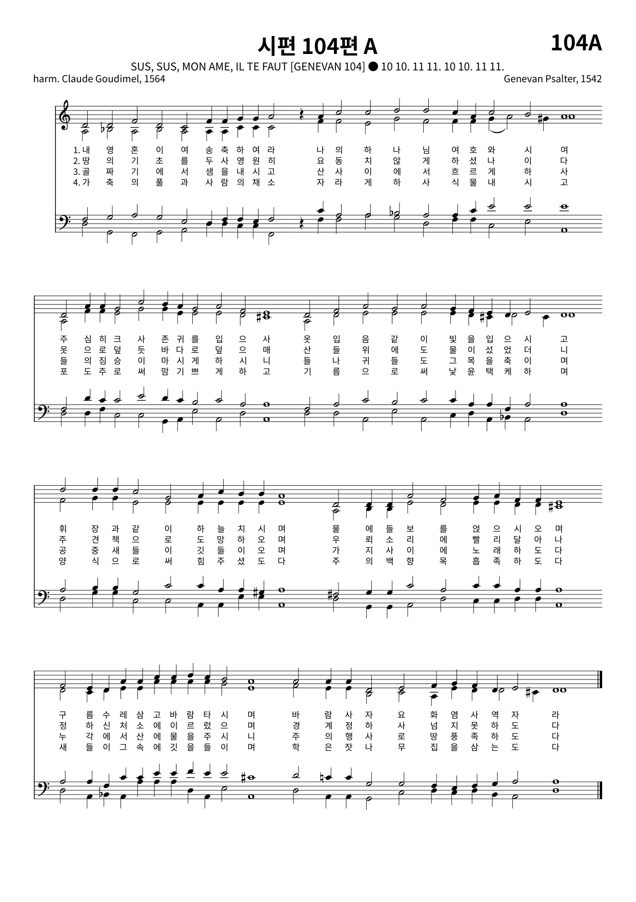

Psalm 104A
SUS, SUS, MON AME, IL TE FAUT [GENEVAN 104] · 10 10. 11 11. 10 10. 11 11.
English title: O Bless the LORD, My Soul, and Praise
Tune: Genevan Psalter, 1542 · Harmony: Claude Goudimel, 1564 · Lyrics: Korean adaptation of Psalm 104 from the Korean Revised Version (AI draft adaptation · not yet theologically reviewed) · 4 stanzas
Psalm 104 is divided into 2 tunes: A B · This tune contains stanzas 1–4 of the Psalm 104 lyrics.
Score PDF MusicXML (for printing) MusicXML (for accompaniment, with prelude and repeats) Read Psalm 104 (Korean Revised Version)
Score
← Psalm 103 ListAccompaniment (in preparation)Psalm 104B →
Lyrics (Korean)
Stanza 1
내 영혼이여 송축하여라
나의 하나님 여호와시여
주 심히 크사 존귀를 입으사
옷 입음 같이 빛을 입으시고
휘장과 같이 하늘 치시며
물에 들보를 얹으시오며
구름 수레 삼고 바람 타시며
바람 사자요 화염 사역자라
내 영혼이여 송축하여라
나의 하나님 여호와시여
주 심히 크사 존귀를 입으사
옷 입음 같이 빛을 입으시고
휘장과 같이 하늘 치시며
물에 들보를 얹으시오며
구름 수레 삼고 바람 타시며
바람 사자요 화염 사역자라
Stanza 2
땅의 기초를 두사 영원히
요동치 않게 하셨나이다
옷으로 덮듯 바다로 덮으매
산들 위에도 물이 섰었더니
주 견책으로 도망하오며
우뢰 소리에 빨리 달아나
정하신 처소에 이르렀으며
경계 정하사 넘지 못하도다
땅의 기초를 두사 영원히
요동치 않게 하셨나이다
옷으로 덮듯 바다로 덮으매
산들 위에도 물이 섰었더니
주 견책으로 도망하오며
우뢰 소리에 빨리 달아나
정하신 처소에 이르렀으며
경계 정하사 넘지 못하도다
Stanza 3
골짜기에서 샘을 내시고
산 사이에서 흐르게 하사
들의 짐승이 마시게 하시니
들나귀들도 그 목을 축이며
공중 새들이 깃들이오며
가지 사이에 노래하도다
누각에서 산에 물을 주시니
주의 행사로 땅 풍족하도다
골짜기에서 샘을 내시고
산 사이에서 흐르게 하사
들의 짐승이 마시게 하시니
들나귀들도 그 목을 축이며
공중 새들이 깃들이오며
가지 사이에 노래하도다
누각에서 산에 물을 주시니
주의 행사로 땅 풍족하도다
Stanza 4
가축의 풀과 사람의 채소
자라게 하사 식물 내시고
포도주로써 맘 기쁘게 하고
기름으로써 낯 윤택케 하며
양식으로써 힘 주셨도다
주의 백향목 흡족하도다
새들이 그 속에 깃을 들이며
학은 잣나무 집을 삼는도다
가축의 풀과 사람의 채소
자라게 하사 식물 내시고
포도주로써 맘 기쁘게 하고
기름으로써 낯 윤택케 하며
양식으로써 힘 주셨도다
주의 백향목 흡족하도다
새들이 그 속에 깃을 들이며
학은 잣나무 집을 삼는도다